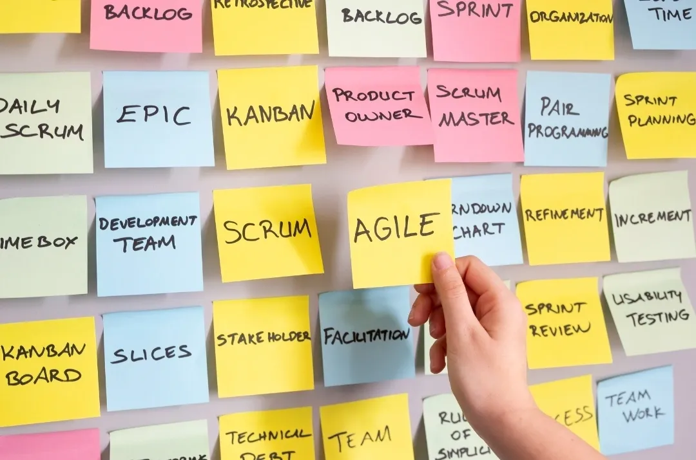

Müşteriler Neden Freelance Kaynakları Tercih Ediyor Dinamik pandemi sonrası dünyada, işletmeler yetenek edinimini yeniden tanımlıyor, özellikle kısa vadeli projeler için. İşte müşterilerin neden freelancer'ları tercih ettiği... Devamını Oku
Kısa Vadeli Projelerde Proje Yönetiminde Uzmanlaşma Hızlı tempolu ERP dünyasında, kısa vadeli projeler inovasyon ve ölçeklenebilirliği sağlamada çok önemlidir. Bu projeleri yönetmek, çevik doğalarına uygun benzersiz bir beceri seti ve strateji gerektirir... Devamını Oku
SAP ECC Desteğinin Sona Ermesi: S/4HANA'ya Geçiş SAP, ECC (ERP Central Component) sistemi için desteğini 2027 yılına kadar sonlandıracağını duyurdu. Bu kararın, hala ECC'ye bağlı işletmeler için önemli etkileri var ve SAP'nin yeni nesil ERP paketi S/4HANA'ya geçişin aciliyetini vurguluyor... Devamını Oku
Uzaktan Proje Yönetimi ile Olağanüstü Sonuçlar Elde Edin Günümüzün hızlı tempolu iş dünyasında, uzaktan çalışma artık sadece bir trend değil - en iyi yeteneğe erişmenin ve olağanüstü sonuçlar elde etmenin anahtarıdır... Devamını Oku
SAP Clean Core: Büyüme için Optimize Edilmiş Çözüm SAP sistemlerindeki Clean Core yaklaşımı, işletmelerin daha verimli ve sürdürülebilir bir büyüme elde etmelerini sağlar... Devamını Oku
Daha Hızlı, Daha Akıllı Çözümler için AI Destekli Yazılım Geliştirme Yazılım geliştirme dünyası hızla gelişiyor ve AI destekli çözümleri kullanan işletmeler önemli bir avantaj elde ediyor... Devamını Oku
Üretimde Dijital Dönüşüm İçin İpuçları ve Stratejiler Üretim sektörü, şirketlerin rekabetçi kalmak, operasyonel verimliliği artırmak ve artan müşteri taleplerini karşılamak için dijital dönüşümü benimsemesiyle önemli bir değişim geçiriyor... Devamını Oku
Yapay Zeka ve Makine Öğrenimi: Üretimin Geleceği Yapay Zeka (AI) ve Makine Öğrenimi (ML), üretimde önemli dönüşümlere yol açıyor... Devamını Oku
Değişimi Benimsemek: Başarılı Proje Tesliminin Temel Taşı Yeni BT sistemleri uygularken veya mevcut olanları güncellerken, değişim yönetimi, sorunsuz geçişler sağlamak ve yatırımınızın değerini en üst düzeye çıkarmak için çok önemlidir... Devamını Oku
 SAP Projeleri İçin En İyi Çevik Proje Yönetim Araçları Başarılı SAP uygulamaları için vazgeçilmez olduğu kanıtlanan en iyi Çevik proje yönetim araçlarını keşfedin... Devamını Oku
SAP'nin Geleceği: Yeni Trendler ve Teknolojiler İş dünyası hızla evrim geçirmeye devam ederken, organizasyonların rekabet avantajlarını koruyabilmeleri için gelişmelerin önünde olmak hayati önem taşıyor... Devamını Oku
SAP Uygulamasında Yaygın Zorluklar ve Çözümleri Bir SAP uygulama sürecine başlamak hem heyecan verici hem de zorlu olabilir. Organizasyonlar operasyonlarını optimize etmeye ve yeni olanakları keşfetmeye çalışırken, süreç boyunca yaygın zorlukları ele almak çok önemlidir... Devamını Oku
Dijital Dönüşümü Yönlendirmek: SAP İş Çevikliğini Nasıl Sağlar Günümüzün hızlı tempolu iş dünyasında, organizasyonların çevik, uyarlanabilir ve dijital dönüşüme hazır olması gerekiyor. İşte SAP burada devreye giriyor! Devamını Oku
Stream Adlandırmasının Yükselişi ve Geleneksel SAP Modül Referansları MM (Malzeme Yönetimi) veya PP (Üretim Planlaması) gibi modül adlarını SAP içindeki belirli süreçleri tanımlamak için kullanma günlerine veda edin... Devamını Oku
SAP S/4HANA Geçişinde Bluefield Yaklaşımı Bluefield yaklaşımı, SAP S/4HANA'ya geçerken benzersiz avantajlar sunar... Devamını Oku